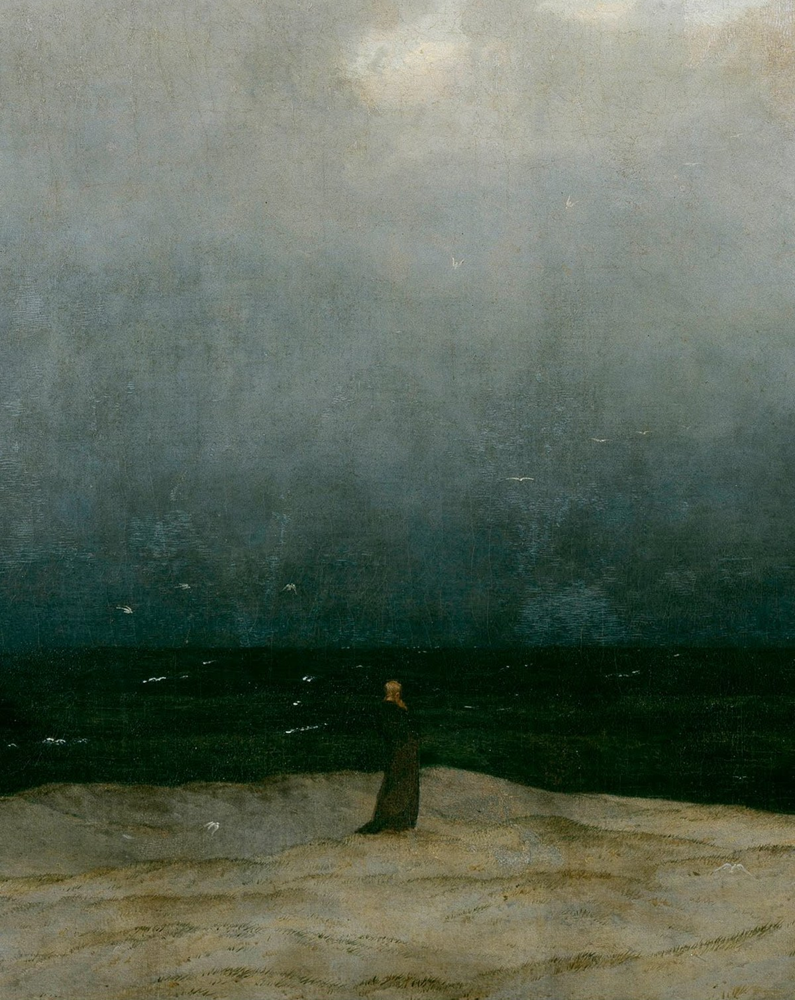
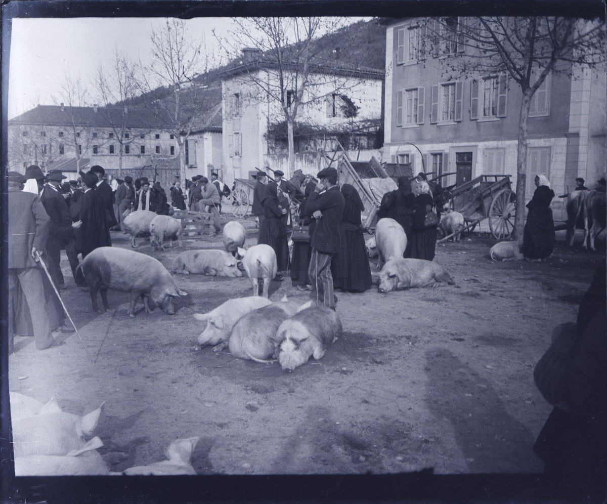

Anglais · A Day in London
Une journée à Londres pour travailler la langue et la culture.
Voir le supportAnnonce Facebook
Catalogue pédagogique
Séquences prêtes à l'emploi · Français, anglais · Tous niveaux
Photographie : Carol M. Highsmith, salle de lecture de la Library of Congress. Domaine public.
À propos
Ces séquences sont le fruit de longs mois de travail. Je les ai conçues d'abord pour les professeurs remplaçants et les professeurs contractuels, qui reprennent une classe en cours d'année et doivent s'approprier, souvent sans manuel, les cours et le manuel de quelqu'un d'autre. Elles s'adressent aussi aux élèves absents pour cause de maladie ou d'hospitalisation longue, qui peuvent suivre à distance. Il s'agit en fait de garder le fil de l'éducation.
Elles servent également à celles et ceux qui veulent construire une progression sur toute l'année ou renouveler leurs habitudes, ainsi qu'aux néo-titulaires et aux professeurs stagiaires, qui trouveront ici des supports de cours clé en main pour leurs séances.
Je n'ai pas la prétention de tout savoir, mais j'ai trente-cinq ans d'expérience, et j'ai souhaité vous les proposer à titre gracieux. Rien ne vous oblige, bien sûr, à consulter ce site : vous pouvez simplement le parcourir comme une promenade, et le visiter comme une petite galerie.
Madame Carole Paoli Pompougnac

Section
Anglais, Lettres, option littérature et HLP, de la Seconde à la Terminale.
Une journée à Londres pour travailler la langue et la culture.
Voir le supportAnnonce FacebookSe déplacer à Londres : transports et langage utile.
Voir le supportAnnonce FacebookOthello, or the trap of theatrical illusion: a C1 sequence in English, ten lessons in tabs, towards hypokhâgne and Licence LLCER.
Voir le supportAnnonce FacebookLe marathon de New York comme disruptor urbain et social.
Voir le supportAnnonce FacebookMéthodologie de l'écrit : construire un essai en anglais.
Voir le supportAnnonce FacebookLa plus grande ville n’est pas toujours la capitale : sept leçons de B1 sur la carte des États-Unis, un road trip et une carte postale.
Voir le supportAnnonce FacebookDes États-Unis au Commonwealth : capitales, compromis et débat, sept leçons de seconde LVA B1+.
Voir le supportAnnonce FacebookMI5, MI6 et le monde de James Bond : six leçons de 55 minutes, calibrées sur 52 minutes, jusqu’à un entretien de recrutement fictif. Tronc B1, progression vers B1+ (LVA).
Voir le supportAnnonce FacebookÉlections américaines, Congrès, Porto Rico et Washington, D.C. : sept leçons de Première calibrées sur 52 minutes, avec les tableaux de Bingham et une émission de radio. Version dys en autonomie (SEGPA, CAP, CFA, Bac pro).
Voir le supportAnnonce FacebookElizabeth II, l’image et le pouvoir : huit leçons de Terminale, tronc commun B2 et spécialité LLCER vers C1, calibrées sur 52 minutes. Discours de 1947, 1992, 1997 et 2020, méthode d’analyse de portraits, The Crown comme fiction.
Voir le supportAnnonce FacebookDe la Magna Carta à Downing Street : institutions britanniques.
Voir le supportAnnonce FacebookVersion approfondie de The King Reigns : Magna Carta, 1689, Bagehot, Dicey, Brexit, la prorogation de 2019, l'Écosse et le vote à seize ans.
Voir le supportDes voix de jeunes, deux tableaux, la terre et l’eau au Canada. Huit leçons d’anglais, jusqu’à une audience citoyenne et une lettre ouverte. Une présentation pour les collègues ouvre la séquence. Parcours bac pro, CAP et version adaptée (dyslexie).
Voir le supportAnnonce FacebookFiche pour préparer l’oral sur le livre de 1960 : exposé, présentation brève pour l’EAF, explication linéaire du prologue, entretien, liens et lexique.
Voir le supportCouverture de l’édition Folio, Gallimard.
Neuf séances pour la lecture à voix haute, l’explication, la présentation d’une œuvre et l’entretien. Une partie complémentaire pour le chef-d’œuvre au CAP et le projet au baccalauréat professionnel. La Boétie et Sarraute, oraux modèles en dialogue, avec la spirale de Gorse.
Voir le supportHuit séances pour construire une réponse personnelle : ancrer, éprouver, déplacer. Dissertation pour la voie générale, contraction et essai pour la voie technologique, avec la spirale de Gorse.
Voir le supportŒuvre au programme 2026-2027, parcours « émancipations créatrices ». Cinq poèmes, la spirale de Gorse, les figures de style.
Voir le supportAnnonce FacebookHugo à l'oral : la figure d'Enjolras sur la barricade.
Voir le supportAnnonce FacebookLittérature d'idées et presse en Première.
Voir le supportAnnonce FacebookMaupassant : lire et analyser Boule de suif.
Voir le supportAnnonce FacebookDu secret des choses au vertige de la consommation, en Première générale et technologique. Une version Terminale spécialité HLP, pour préparer la classe prépa littéraire et l'université, sera proposée à côté de celle-ci.
Niveau PremièreTerminale spécialité HLP · Préparer la classe prépa littéraire (à paraître)
Lecture, écriture et littérature d'idées. Douze séances, la spirale de Gorse, trois évaluations dont un oral.
Voir le supportAnnonce FacebookCaspar David Friedrich, Der Mönch am Meer (Le Moine au bord de la mer), 1808-1810. Huile sur toile, Alte Nationalgalerie, Berlin. Domaine public.
Préparation au Bac de français : s'approprier les textes.
Voir le supportAnnonce FacebookDu masque comique à la cruauté tragique : Shakespeare, Marivaux, Musset.
Voir le supportAnnonce FacebookLe mythe chez Barthes, le simulacre chez Baudrillard, Perec et Warhol. Treize séances, un oral sommatif sur un mythe contemporain.
Voir le supportAnnonce FacebookBibliographie indicative, entrée « L’humain et ses limites ». Fiche pour préparer un oral sur le livre de 1960.
Voir le supportCouverture de l’édition Folio, Gallimard.
Huit séances en onglets, la spirale de Gorse, un tableau des approches du moi, un devoir en quatre heures.
Voir le supportLe musée imaginaire de Malraux face à Gombrich, Benjamin, Barthes et Merleau-Ponty : 15 séances de 52 minutes, œuvres commentées, dissertation, commentaire et colle pour préparer l'hypokhâgne.
Voir le support
Section
Supports d'anglais et de lettres pour le CAP et le Bac professionnel.
Une journée à Londres pour travailler la langue et la culture.
Voir le supportAnnonce FacebookSe déplacer à Londres : transports et langage utile.
Voir le supportAnnonce FacebookBoîte à outils d'examen pour le CAP Coiffure (A2).
Voir le supportAnnonce FacebookBoîte à outils d'examen A2, My Working Day, pour plusieurs métiers de CAP (lycée professionnel et CFA) et de CAPA (lycée agricole).
Voir le supportParcours anglais Bac pro autour des quatre compétences.
Voir le supportAnnonce FacebookSupports pour le Bac pro à distance en anglais et en français.
Voir le supportAnnonce FacebookImmobilier new-yorkais : séquence en cinq séances.
Voir le supportAnnonce FacebookUn an en Australie : visa vacances-travail, budget, emploi, transports et vie quotidienne. Treize séances pour la Terminale bac pro, adaptables en Première bac pro, plus l'évaluation.
Voir le supportAnnonce FacebookAnglais professionnel du CAP A2 au Bac pro B1 à B2.
Voir le supportAnglais du commerce et de la vente.
Voir le supportAnnonce FacebookAnglais professionnel en cuisine.
Voir le supportAnnonce FacebookVendre des produits locaux à la foire (B1).
Voir le supportAnnonce FacebookTravailler l'oral en anglais Bac pro.
Voir le supportAnnonce Facebook
Séquence de français, Terminale baccalauréat professionnel : Mangez-le si vous voulez de Jean Teulé. La machine de la rumeur, autour du drame de Hautefaye, le 16 août 1870. Huit séances, schéma final, traces écrites, devoir et évaluation.
Voir le supportAnnonce FacebookEugène Trutat, Foire aux cochons, Bélesta (Tarn), octobre 1897. Bibliothèque nationale de France. Domaine public, via Wikimedia Commons.
Les circuits de l'information en Seconde Bac pro.
Voir le supportAnnonce FacebookProjet chef-d'œuvre, aussi adaptable en SEGPA 4e à 3e.
Voir le supportAnnonce Facebook
Section
Anglais et Lettres rangés par diplôme préparé.
Ressources pour apprentis en filière Production.
Voir le supportAnnonce FacebookVocabulaire de la cuisine et du quotidien (CAP A2).
Voir le supportAnnonce FacebookFrançais professionnel pour le CAP et le CFA.
Voir le supportAnnonce FacebookPréparation de l'oral en français pour le CFA.
Voir le supportAnnonce Facebook
Collection
Outils transversaux : méthode, progression annuelle, évaluation, GEREX.
Les ressources de français réunies par examen : brevet (DNB), CAP, bac professionnel, bac de français à l’écrit et à l’oral.
Voir le supportLes examens d’anglais réunis : brevet (DNB), CAP et CAPA, bac professionnel, lycée général et technologique (LVA, LVB, LLCER, AMC, Grand Oral), avec la spirale de Gorse.
Voir le supportHuit séances pour construire une réponse personnelle : ancrer, éprouver, déplacer. Dissertation pour la voie générale, contraction et essai pour la voie technologique, avec la spirale de Gorse.
Voir le supportPrésentation de GEREX pour retrouver des outils utiles en classe.
Voir le supportAnnonce FacebookExercices de ponctuation en anglais.
Voir le supportAnnonce FacebookMéthodologie de l'écrit : construire un essai en anglais.
Voir le supportAnnonce FacebookMéthodes pour résumer un texte et construire une argumentation.
Voir le supportAnnonce FacebookPistes pour aider les élèves à apprendre efficacement.
Voir le supportAnnonce FacebookDonner le goût de l'étude et de la curiosité intellectuelle.
Voir le supportAnnonce FacebookOrganiser et animer des cours à distance en français et en anglais.
Voir le supportAnnonce FacebookÉvaluation au service des progrès des élèves.
Voir le supportAnnonce FacebookAtelier pour élargir le vocabulaire en anglais.
Voir le supportAnnonce FacebookFiches GEREX pour le français et l'anglais, du CAP au Bac général et technologique.
Voir le supportAnnonce FacebookEspace de soutien s'appuyant sur les outils GEREX.
Voir le supportAnnonce FacebookPrise de notes pour le post-bac (BTS, IUT, université).
Voir le supportAnnonce FacebookRepères pour une pédagogie orientée vers la réussite.
Voir le supportAnnonce FacebookProgression annuelle en français et en anglais, de la Seconde à la Terminale.
Voir le supportAnnonce FacebookRessources en préparation.
Neuf séances pour la lecture à voix haute, l’explication, la présentation d’une œuvre et l’entretien. Une partie complémentaire pour le chef-d’œuvre au CAP et le projet au baccalauréat professionnel. La Boétie et Sarraute, oraux modèles en dialogue, avec la spirale de Gorse.
Voir le supportUn code couleur pour participer sans s'exposer : trois ardoises sur pique, un classeur noté, et une sortie de cours prévue avec la vie scolaire.
Voir le supportApproche du théâtre : lire, dire et jouer les textes.
Voir le supportAnnonce Facebook
Section
Anglais et Lettres pour les lycées agricoles, du CAP au BTSA.
Parcours anglais et français pour les lycées agricoles.
Voir le supportAnnonce FacebookVocabulaire de la cuisine et de la ferme.
Voir le supportAnnonce FacebookCamus en BTSA (M22) : l'individu face aux normes.
Voir le supportAnnonce FacebookZola et le Grand Oral dans l'enseignement agricole.
Voir le supportAnnonce Facebook
Section
Séquences d'anglais et de français pour les niveaux 6e à 3e, y compris SEGPA.
Année complète en 5e LVA A2 / LVB A1+, unités culturelles UK.
Voir le supportAnnonce FacebookSéquences GEREX pour accompagner du niveau 6e à 3e.
Voir le supportAnnonce Facebook
La 4e comme année tournant : les cinq questionnements du programme, cours complets, traces écrites, travail à la maison, langue, oral, exposés, évaluations et grilles, et des premiers pas vers la 3e.
Voir le supportMarie Bashkirtseff, Un meeting, 1884. Huile sur toile, musée d'Orsay, Paris. Domaine public.

Parcours de français pour la troisième : dictée, rédaction, réécriture et oral, pour préparer le DNB 2026.
Voir le supportRembrandt, Autoportrait aux deux cercles, vers 1665-1669. Huile sur toile, Kenwood House, Londres. Domaine public.

A full year of English in quatrième, taught step by step.
Voir le supportThomas Moran, The Grand Canyon of the Yellowstone, 1872. Oil on canvas. Smithsonian American Art Museum, Washington. Public domain.

A full year of English in troisième, with DNB preparation through continuous classroom assessment.
Voir le supportJ. M. W. Turner, The Fighting Temeraire tugged to her last berth to be broken up, 1839. Oil on canvas. National Gallery, London. Public domain.

Panneau dédié au DNB 2026 : français (dictée, rédaction, réécriture, oral) et anglais par le contrôle continu.
Voir le supportJean Siméon Chardin, Un philosophe occupé de sa lecture (Portrait du peintre Joseph Aved), 1734. Musée du Louvre, Paris. Domaine public.